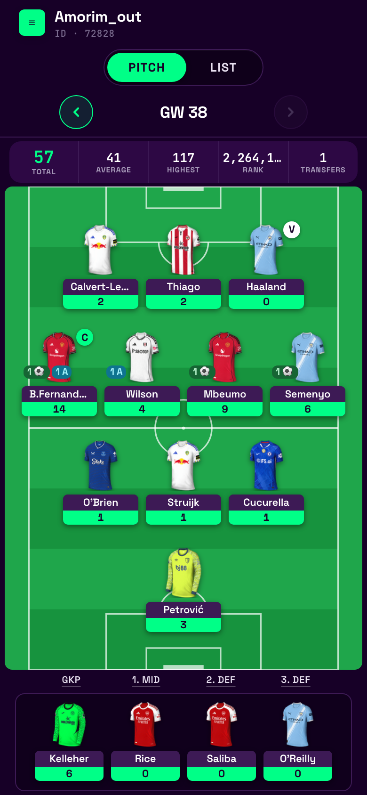
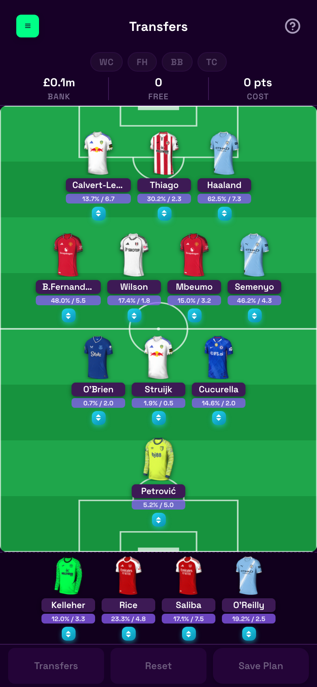
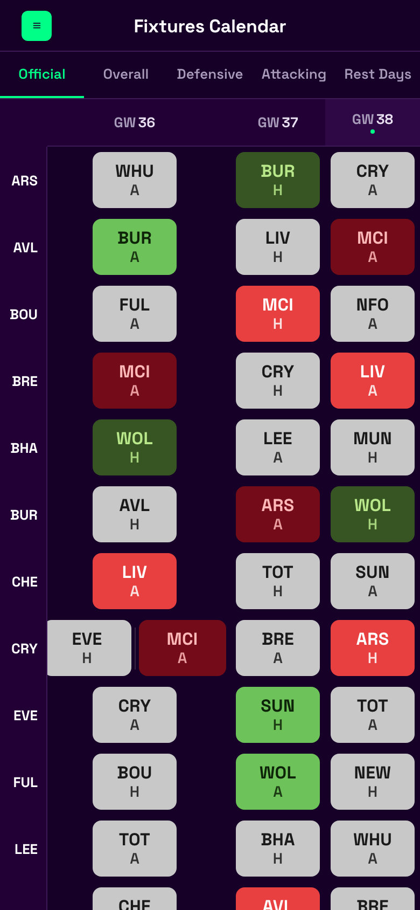
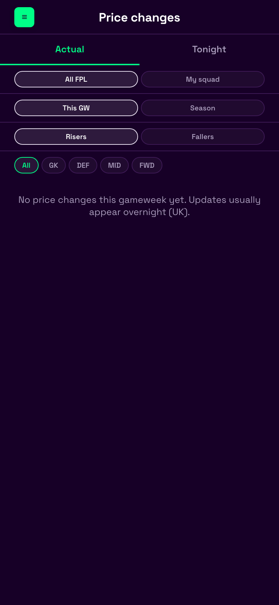
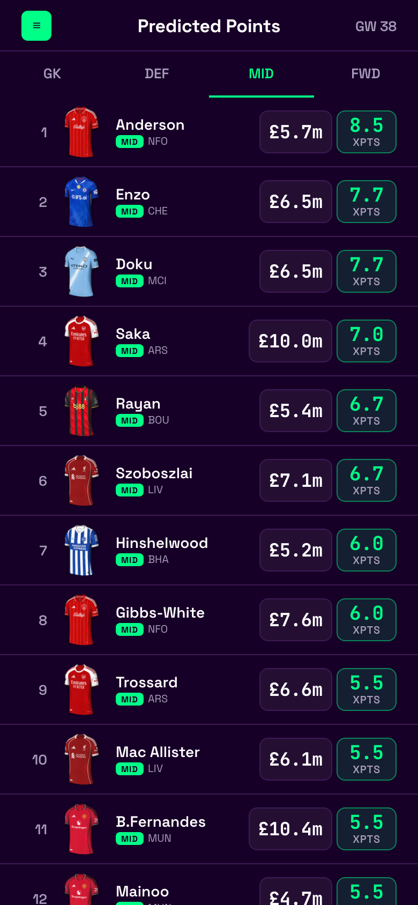
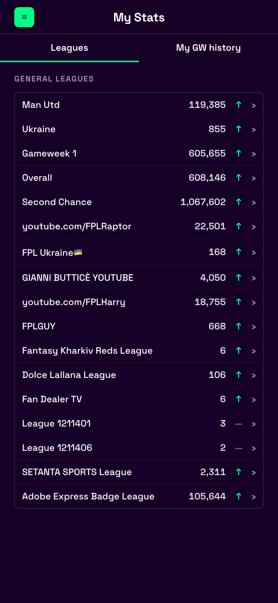
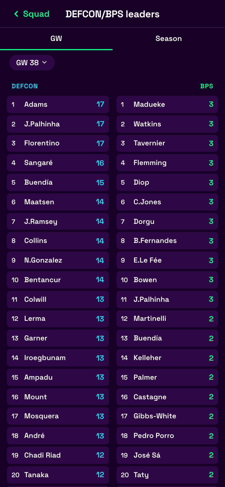
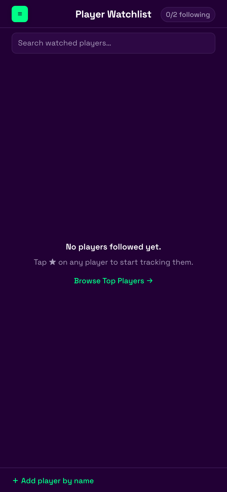

Investor brief · June 2026
Mobile-first Fantasy Premier League toolkit for UK, European, and North American managers — plan transfers, read the gameweek, and track rivals in one product.
We are building a subscription freemium companion to the official Fantasy Premier League game. Users link a public FPL team ID (or sign in to sync drafts and watchlists). The product focuses on weekly decision quality — not replacing FPL, not betting, not daily fantasy.
Geography: primary UK; secondary Western Europe and US/Canada English-speaking FPL communities. Single English product, GBP-led pricing with multi-currency checkout.
| Tier | Season (one-time) | Annual | Monthly |
|---|---|---|---|
| Free | £0 | £0 | £0 |
| Premium | £25 | £29/year | £3.99/mo |
| Pro (2026 H2) | £45 | £48/year | £5.99/mo |
Premium launch aligns with fpl.team Wonderkid (~£25/yr) and FPL Focal (~£30/yr). Pro tier deferred until live rank + transfer solver + proprietary xPts model ship.
Screenshots from the running application (local dev, team ID 72828). This is what managers see each gameweek — one app instead of a tab stack.








| Area | Capability | Status |
|---|---|---|
| Squad | Pitch + list views, GW navigation, chips, player cards (FDR, ownership, form badges) | Live |
| Planning | Transfer planner, budget validation, cloud draft sync when signed in | Live |
| Review | Gameweek review — performers, transfers, what-if | Live |
| Fixtures | Season calendar — FDR, DGW/BGW, recovery / rotation view | Live |
| Market | Price changes (actual + tonight predictions); predicted points (freemium) | Live |
| Social | Manager + player watchlists; league participant browser | Live |
| Stats | My stats, leagues, top players, DEFCON/BPS leaderboard | Live |
| Accounts | Email + Google auth; premium upsell flows (paywall UI ready) | Live |
| Initiative | Investor value | ETA |
|---|---|---|
| Premium checkout (MON-01) | Revenue switch | Q3 2026 |
| Predicted lineups (20 clubs) | Parity with fpl.team | Q3 2026 |
| Live rank + mini-league live | Matchday retention | Q3–Q4 2026 |
| Statistical xPts model (PRED-09) | Differentiated predictions + confidence | Q4 2026 |
| Transfer solver | Pro tier anchor vs FPL Review | Q4 2026 |
| Chip advisors (WC/FH/TC/BB) | High-intent premium moments | Q4 2026 – Q1 2027 |
| AI analyst chat | ARPU expansion | 2027 |
| Category | % | Notes |
|---|---|---|
| Engineering | 55% | MON-01, live rank, PRED-09, solver |
| Infrastructure | 15% | Fly → Cloudflare migration, Supabase, Redis at scale |
| Data / ML | 15% | Model validation, optional Opta later |
| Growth | 10% | Paid tests, creator partnerships |
| Legal / ops | 5% | Stripe, privacy, terms |
Product is pre-scale revenue: core screens shipped; payment integration and brand launch are the next gates. Spec-driven monorepo (web + proxy) with unit tests and Storybook on critical UI.